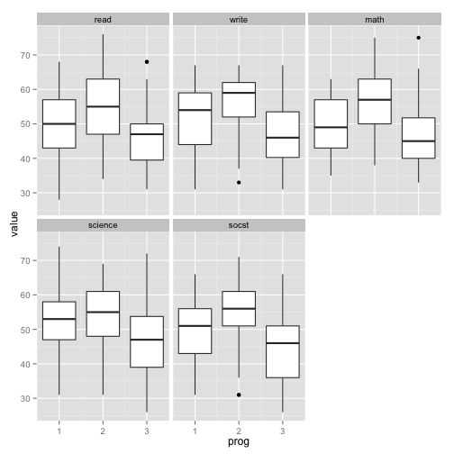

- Reshape2 is based on two functions
- melt takes wide-format data and melts it into long-format data.
- dcast takes long-format data and casts it into wide-format data.
data <- read.table('http://www.ats.ucla.edu/stat/r/faq/hsb2.csv', header=T, sep=",")
head(data,5)
## id female race ses schtyp prog read write math science socst
## 1 70 0 4 1 1 1 57 52 41 47 57
## 2 121 1 4 2 1 3 68 59 53 63 61
## 3 86 0 4 3 1 1 44 33 54 58 31
## 4 141 0 4 3 1 3 63 44 47 53 56
## 5 172 0 4 2 1 2 47 52 57 53 61
library(reshape2)
melteddata <- melt(data,id.vars = 1:6)
head(melteddata,10)
## id female race ses schtyp prog variable value
## 1 70 0 4 1 1 1 read 57
## 2 121 1 4 2 1 3 read 68
## 3 86 0 4 3 1 1 read 44
## 4 141 0 4 3 1 3 read 63
## 5 172 0 4 2 1 2 read 47
## 6 113 0 4 2 1 2 read 44
## 7 50 0 3 2 1 1 read 50
## 8 11 0 1 2 1 2 read 34
## 9 84 0 4 2 1 1 read 63
## 10 48 0 3 2 1 2 read 57
library(ggplot2)
ggplot(melteddata,aes(x=prog,y=value,group=prog))+geom_boxplot()+facet_wrap(~variable)

backtowide <- dcast(melteddata,formula = id+female+race+ses+schtyp+prog~variable)
backtowide_byrace <- dcast(melteddata,formula = race~variable,fun.aggregate = mean)
backtowide_byrace
## race read write math science socst
## 1 1 46.66667 46.45833 47.41667 45.37500 47.79167
## 2 2 51.90909 58.00000 57.27273 51.45455 51.00000
## 3 3 46.80000 48.20000 46.75000 42.80000 49.45000
## 4 4 53.92414 54.05517 53.97241 54.20000 53.68276
backtowide_byraceses <- dcast(melteddata,formula = race+ses~variable,fun.aggregate = mean)
backtowide_byraceses
## race ses read write math science socst
## 1 1 1 45.44444 46.11111 45.22222 44.44444 45.11111
## 2 1 2 44.72727 46.09091 47.18182 45.90909 46.90909
## 3 1 3 54.75000 48.25000 53.00000 46.00000 56.25000
## 4 2 1 58.00000 58.00000 61.66667 55.66667 56.00000
## 5 2 2 49.20000 55.80000 55.00000 47.60000 47.00000
## 6 2 3 50.33333 61.66667 56.66667 53.66667 52.66667
## 7 3 1 44.45455 48.09091 45.27273 39.09091 47.36364
## 8 3 2 48.16667 48.66667 48.16667 47.50000 52.66667
## 9 3 3 52.66667 47.66667 49.33333 47.00000 50.66667
## 10 4 1 49.87500 52.54167 50.87500 51.87500 47.04167
## 11 4 2 53.05479 52.80822 53.10959 53.20548 53.09589
## 12 4 3 57.27083 56.70833 56.83333 56.87500 57.89583
datasets:EuStockMarkets is a dataset in wide format that lists the closing prices for 4 EU stock markets
datasets::airquality is a dataset that tracks 4 variables of climate by month and day.
install.packages("dplyr")
library(dplyr)
flights <- tbl_df(read.csv(url("http://cdn.rawgit.com/ylelkes/R_wav/master/data/flights.csv")))
df <- data.frame( color = c("blue", "black", "blue", "blue", "black"), value = 1:5)
head(df)
## color value
## 1 blue 1
## 2 black 2
## 3 blue 3
## 4 blue 4
## 5 black 5
select(df,color)
## color
## 1 blue
## 2 black
## 3 blue
## 4 blue
## 5 black
select(df,-color)
## value
## 1 1
## 2 2
## 3 3
## 4 4
## 5 5
library(dplyr)
flights <- tbl_df(read.csv("~/Dropbox/R_wav/data/flights.csv"))
names(flights)
## [1] "date" "hour" "minute" "dep" "arr"
## [6] "dep_delay" "arr_delay" "carrier" "flight" "dest"
## [11] "plane" "cancelled" "time" "dist"
select(flights, arr_delay, dep_delay)
select(flights, arr_delay:dep_delay)
select(flights, ends_with("delay"))
select(flights, contains("delay"))
arrange(df,value)
## color value
## 1 blue 1
## 2 black 2
## 3 blue 3
## 4 blue 4
## 5 black 5
arrange(df,desc(value))
## color value
## 1 black 5
## 2 blue 4
## 3 blue 3
## 4 black 2
## 5 blue 1
mutate(df,double= 2* value)
## color value double
## 1 blue 1 2
## 2 black 2 4
## 3 blue 3 6
## 4 blue 4 8
## 5 black 5 10
mutate(df,double= 2* value,quadruple=2*double)
## color value double quadruple
## 1 blue 1 2 4
## 2 black 2 4 8
## 3 blue 3 6 12
## 4 blue 4 8 16
## 5 black 5 10 20
flights <- mutate(flights, speed = distance / (air_time/60))
fastestflights <- arrange(flights, desc(speed))
flights <- mutate(flights, delta = dep_delay - arr_delay)
summarise(df,total=sum(value))
## total
## 1 15
by_color <- group_by(df,color)
summarise(by_color,total=sum(value))
## Source: local data frame [2 x 2]
##
## color total
## 1 black 7
## 2 blue 8
by_date <- group_by(flights, date)
delays <- summarise(by_date,
mean = mean(dep_delay, na.rm = TRUE),
median = median(dep_delay, na.rm = TRUE),
q75 = quantile(dep_delay, 0.75, na.rm = TRUE),
over_15 = mean(dep_delay > 15, na.rm = TRUE),
over_30 = mean(dep_delay > 30, na.rm = TRUE),
over_60 = mean(dep_delay > 60, na.rm = TRUE) )
by_date <- group_by(flights, date)
no_missing <- filter(flights, !is.na(dep))
delays <- summarise(by_date,
mean = mean(dep_delay),
median = median(dep_delay),
q75 = quantile(dep_delay, 0.75),
over_15 = mean(dep_delay > 15),
over_30 = mean(dep_delay > 30),
over_60 = mean(dep_delay > 60) )
Downside of functional interface is that it's hard to read multiple operations:
hourly_delay <- filter(
summarise(
group_by(
filter(
flights,!is.na(dep_delay) ), date, hour ), delay = mean(dep_delay), n = n() ), n > 10
)
hourly_delay <- flights %>%
filter(!is.na(dep_delay)) %>%
group_by(date, hour) %>%
summarise(delay = mean(dep_delay), n = n()) %>%
filter(n > 10)
Create data pipelines to answer the following questions:
flights %>% group_by(dest) %>% summarise( arr_delay = mean(arr_delay, na.rm = TRUE), n = n()) %>% arrange(desc(arr_delay))
flights %>% group_by(carrier, flight) %>% filter(n() == 365)
per_hour <- flights %>% filter(cancelled == 0) %>% mutate(time = hour + minute / 60) %>% group_by(time) %>% summarise( arr_delay = mean(arr_delay, na.rm = TRUE), n = n() )
qplot(time, arr_delay, data = per_hour)